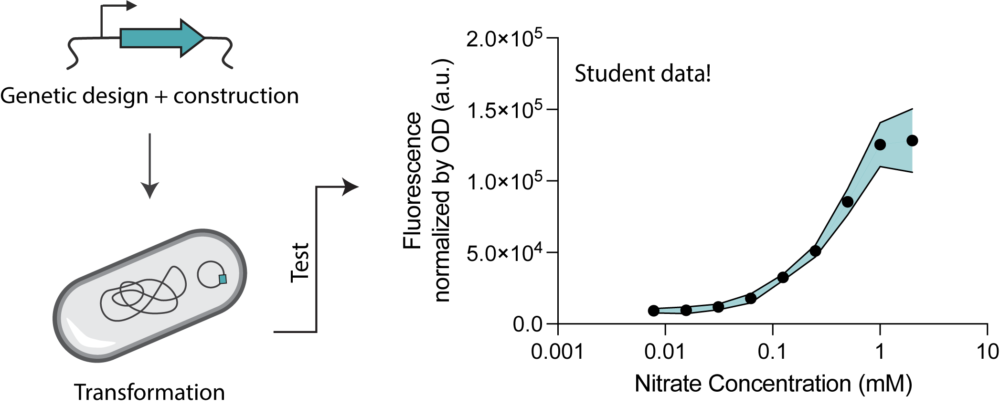

2025
Course developer, Environmental Biology Lab Course
With Prof. David Des Marais, organized an environmental microbiology lab module for a new course starting Fall 2025.

My teaching record is a reflection of my passion for education and mentorship. I look forward to building a dynamic classroom with students eager to learn and engaged with curiosity.
With Prof. David Des Marais, organized an environmental microbiology lab module for a new course starting Fall 2025.

Prepared and delivered 6 lectures using active learning techniques to a class of 90 sophomores, and developed specific student learning objectives to assess learning in the classroom.
Led student hours and developed review materials to advance student learning.
Led student hours, prepared learning materials, and moved the course from in-person to online during the pandemic.
Prepared problem-solving presentations for the discussion section.